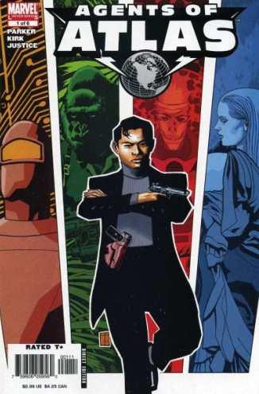

6 issues 2006 Marvel
Illustrator: Leonard Kirk
Writer: Jeff Parker
About: Composed of characters originally appearing in unrelated stories published in the 1950s by Marvel's predecessor company, Atlas Comics.
- Namora – Marvel Mystery Comics #82 (May 1947)
- Venus – Venus #1 (Aug. 1948)
- Marvel Boy/The Uranian – Marvel Boy #1 (Dec. 1950)
- Gorilla-Man – Men's Adventures #26 (Mar. 1954)
- M-11/the Human Robot – Menace #11 (May 1954)
- Jimmy Woo – Yellow Claw #1 (Oct. 1956)
Issue #1: S.H.I.E.L.D. uncovers the existence of a superhero group that operated covertly in the 1950's, headed by Jimmy Woo. When Jimmy Woo is seriously injured the group reforms and breaks into S.H.I.E.L.D. and removes Jimmy.
The series have been collected into individual volumes:
- Agents of Atlas (collects Agents of Atlas 6-issue limited series plus first appearances of major characters: Marvel Boy #1, Marvel Mystery Comics #82 (May 1947), Men's Adventures #26 (March 1954), Menace #11 (May 1954), Venus #1 (Aug. 1948), What If?#9 (June 1978), and Yellow Claw #1, October 1956, 256 pages, Marvel Comics, premiere hardcover, May 2007, ISBN 0-7851-2712-7, softcover, February 2009, ISBN 0-7851-2231-1)
- Agents of Atlas: Dark Reign (collects Agents of Atlas vol. 2, #1–5, "Wolverine: Agent of Atlas" and the preview story from Dark Reign: New Nation, 184 pages, premiere hardcover, September 2009, ISBN 0-7851-3898-6, softcover, January 2010, ISBN 0-7851-4126-X)
- Agents of Atlas: Turf Wars (collects Agents of Atlas vol. 2, #6–11, 176 pages, premiere hardcover, February 2010, ISBN 0-7851-4276-2, softcover, December 2009, ISBN 0-7851-4031-X)
- Agents of Atlas vs. (collects X-Men vs. Agents of Atlas #1–2 and Avengers vs. Atlas #1–4, 168 pages, premiere hardcover, August 2010, ISBN 0-7851-4772-1, softcover, November 2010, ISBN 0-7851-4773-X)
- Atlas: Return of the Three Dimensional Man (collects Atlas #1–5, and Assault on New Olympus material from Incredible Hercules #138–141, 176 pages, ISBN 978-0-7851-4696-4)